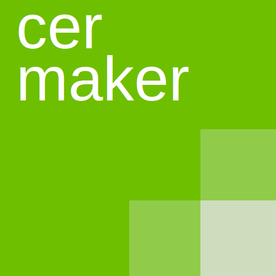

VAROVÁNÍ:
Aplikace cermaker je stále ve vývoji. Jestli najdete nějakou chybu, neváhejte nás kontaktovat pomocí formuláře (tlačítko vpravo dole). Seznam budoucích funkcí je dostupný
zde
.
Vaše testy
Vytvořit nový test